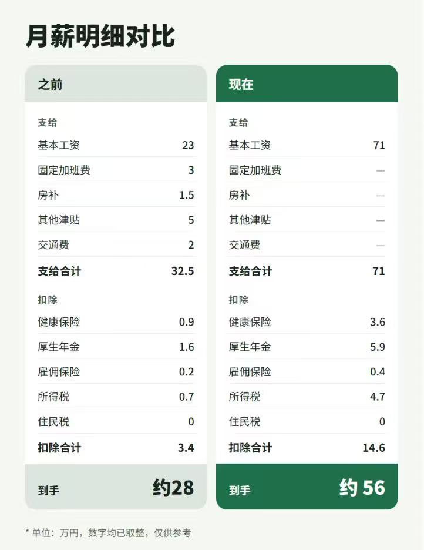

派遣三年，到手 28 万。跳到外资，到手 56 万。
这不是我，是我的一个粉丝。他把前后两份工资明细发给了我，我看完直接坐直了。
先看他是谁
- 2022 年，中国文科毕业；
- 赴日读语言学校；
- 进了一家派遣会社，干了三年；
- 最近转到日本外资企业，做云业务相关的咨询；
- 英语不错。
文科，不是计算机科班，也不是名校硕士。你看，这条路并没有想象中那么难走。
月薪明细对比

单位：万日元，数字均已取整，仅供参考。
之前：派遣会社
- 基本工资 23 万，加上固定加班费 3 万、房补 1.5 万、其他津贴 5 万、交通费 2 万，支给合计 32.5 万；
- 扣掉健康保险、厚生年金、雇用保险、所得税，一共约 3.4 万；
- 到手约 28 万。
现在：外资企业
- 基本工资 71 万，没有加班费、房补、交通费这些零碎，支给就是 71 万；
- 扣除合计约 14.6 万（健康保险 3.6、厚生年金 5.9、雇用保险 0.4、所得税 4.7）；
- 到手约 56 万。
这张表里最扎眼的三件事
1. 基本工资涨了 3 倍，到手只翻了 1 倍
23 万到 71 万，是 3 倍多。但到手是 28 万到 56 万，刚好 2 倍。差在哪？一是原来那些津贴没了，二是收入高了，社保和所得税都跟着涨。扣除从 3.4 万涨到 14.6 万，这是高收入的代价，也是好事。
2. 以前的 32.5 万，里面一半是「零碎」
基本工资只占 23 万，剩下的是固定加班费、房补、各种津贴。看着总额不低，但基本工资低，意味着奖金、退职金这些按基本工资算的东西也低。外资这边，71 万是干干净净的基本工资。
3. 换的不只是钱
从派遣，到自己公司的正社员；从做具体活，到做咨询。同样是 IT，位置不一样，天花板就不一样。
派遣做得再久，单价到一定程度就不动了，这个我在另一期视频里讲过。要想破局，就得换赛道。
他为什么能成
我没有他的面试记录，只能说我的观察：
- 英语。外资企业，英语是门槛，也是加分项。他英语不错，这一条拉开了和大多数派遣同事的差距；
- 云。云业务是这几年需求最旺的方向之一，会的人不够，愿意出价；
- 三年经验。在派遣会社干满三年，有项目经验，说得清自己做过什么。
这三样加在一起，文科背景就不是问题了。
想走这条路的人，可以先做三件事
- 把英语捡起来，不用考多高的分，但要能开口、能读技术文档；
- 找一个云方向（AWS、Azure、GCP 随便一个），哪怕从考个入门认证开始；
- 算一算自己现在的基本工资占比，别被各种津贴迷惑。
最后
到手从 28 万到 56 万，不是靠运气，是靠选对了方向，又把英语和云这两张牌攥在了手里。
你现在的到手是多少？下一步，你打算押什么？